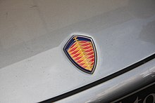

El CCR fue una evolución del CC8S, producido entre 2004 y 2006. Se fabricaron 14 en total.
La compañía fue fundada en 1994 en Suecia por Christian von Koenigsegg, con la intención de producir un superdeportivo de clase mundial. Muchos años de desarrollo y creación de prototipos llevaron a la primera entrega de automóviles de producción de la marca que fue el CC, modelo que al final culminó en el CC8S de 2002. En 2006 comenzó la producción del CCX, que utiliza un motor creado internamente especialmente para ese vehículo. Es legal en la calle en la mayoría de los países, incluido en los Estados Unidos. En marzo de 2009, el CCXR fue elegido por Forbes como uno de los coches más bellos de la historia. El 16 de junio de 2009, General Motors y Koenigsegg confirmaron los detalles del acuerdo para que Koenigsegg fuera el propietario de Saab, que al final se rompió y condujo a la desaparición de este último. En diciembre de 2010, el Agera ganó el premio BBC Top Gear del superdeportivo del año. Además de desarrollar, fabricar y vender la línea de superdeportivos, Koenigsegg también participa en programas de desarrollo de "tecnología ecológica" que comienzan con CCXR "Flower Power" flex-fuel y continuaba con el Agera R. Koenigsegg también está activo en programas de desarrollo de sistemas de automóviles híbridos eléctricos enchufables y tecnologías de próxima generación motor alternativo. Koenigsegg también está funcionando en un motor de pistón sin cámara para el Regera.5 Koenigsegg desarrolla y produce la mayoría de los principales sistemas, subsistemas y componentes necesarios para sus automóviles en la empresa en lugar de depender de subcontratistas. A fines de 2015, tenía 97 empleados con un departamento de 25 ingenieros, dirigido por el fundador. En la compañía trabajaban poco más de 400 personas hasta febrero de 2021, con la colaboración de varias empresas, todas ellas también suecas. La empresa ha tenido dos fábricas diferentes, ya que la primera sufrió un incendio en 2003. La actual está situada en la antigua base F10 de la Fuerza Aérea Sueca cerca de Ängelholm, al suroeste de Suecia, la cual dio el emblema de los fantasmas en la parte trasera de sus modelos, debido a que en esa base entrenaba el "Ghost Squad" (Escuadrón Fantasma).
El concepto de este superdeportivo se estableció desde el principio: un biplaza con motor central y techo rígido, todo ello basado en la tecnología más avanzada de Fórmula 1. Para ello se creó una red de diseñadores e ingenieros competentes, con conexiones tanto en la industria automovilística sueca como en las universidades.
El CC8S, que debutó en el Salón del Automóvil de París en 2000 después de 8 años de desarrollo, fue el primer modelo de producción de Koenigsegg. Con su chasis y carrocería de carbono, una potencia de motor récord y un techo desmontable y plegable, el CC8S sentó las bases de la estética, la filosofía y la funcionalidad de todos los automóviles Koenigsegg desde entonces. Solo se fabricaron 6 ejemplares del CC8S, en 2002 y 2003.
El CCR fue una evolución del CC8S, producido entre 2004 y 2006. Se fabricaron 14 en total.
El Koenigsegg CCX parecía para muchos una mera evolución del CCR. La realidad no podría estar más lejos de la verdad. El CCX era un verdadero Koenigsegg de tercera generación, diseñado sobre un chasis agrandado sin casi ningún componente transferido. El CCX presentaba la última tecnología disponible, incluido un nuevo motor, nueva suspensión y aerodinámica. El CCX fue diseñado para batir récords y, con su larga lista de logros, ese objetivo se cumplió y luego se superó con creces.
La CCGT surgió como un proyecto paralelo de Christian y los ingenieros de Koenigsegg. Cuando Christian comenzó a construir y diseñar el primer prototipo CC, las carreras siempre fueron parte del panorama general. Por eso Christian estudió el reglamento ACO Le Mans y se aseguró de que su coche cumpliera los requisitos de una de las categorías de carreras más interesantes de la época: la clase GT1.
El CCXR era un CCX al que se le había añadido "Flower Power", ya que también podía funcionar con combustible renovable como el etanol E85, lo que lo convertía en el primer superdeportivo ecológico del mundo. Ningún otro fabricante de superdeportivos estaba siquiera considerando un enfoque medioambiental en ese momento. El CCXR podría llevar el rendimiento a un nivel completamente nuevo, ya que los combustibles de etanol tienen un octanaje más alto que el gas de bombeo normal, lo que permite una mayor producción. El CCXR agregó más de 200 hp a la ya fenomenal potencia del CCX, produciendo unos increíbles 1018 hp.
El CCR fue una evolución del CC8S, producido entre 2004 y 2006. Se fabricaron 14 en total.
Su primer modelo fabricado fue el CC, seguido por el CC8S y posteriormente por el CCR de 806 CV (795 HP; 593 kW). Koenigsegg usa en las puertas de sus vehículos un sistema de "hélice sincrónica diedral", conocido en el mundo de los clientes automovilísticos como puertas "raptor", que parece combinar las ventajas de todos los diseños aunque con una considerable mayor complejidad mecánica. La continuidad está asegurada, ya la producción del CCX estaba pensado especialmente para el mercado americano y el CCXR que utiliza biocombustible E85. También existen versiones de edición limitada de estos modelos, de los que se proyectó hacer 14 CCX y 6 CCXR, pero la crisis económica mundial ha hecho que solamente se construyeran 2 CCX y 4 CCXR, de 888 y 1018 CV (876 y 1004 HP) (653 y 749 kW), respectivamente. El motor de ambos es de 5032 cm³ (5 litros) biturbo. El Agera Hundra creado en el año 2013, conmemora que la marca ya ha fabricado 100 modelos.